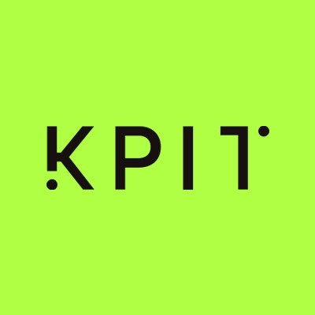
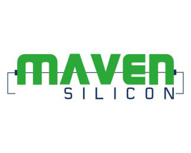

A Code-slinging, bug-smashing, caffeine-fueled tech enthusiast with a flair for turning chaotic lines of code into poetic perfection(sometimes by using GPT). Whether I'm optimizing SQL queries at lightning speed or charming microcontrollers into obedience, I bring the drama, the data, and the dazzle. With a résumé sharper than a freshly initialized pointer and a keyboard worn down by sheer brilliance and gaming, I'm not just here to innovate—I'm here to electrify the digital world.
I am currently pursuing a B.Tech in Electronics and Communication Engineering at Vellore Institute of Technology, Chennai, and have maintained a CGPA of 8.46. My coursework has equipped me with a solid foundation in both hardware and software domains, while project work and internships have enhanced my practical understanding of embedded systems, computer networks, programming, and data analytics.
I completed my CBSE Class 12th education in 2021 from Happy Valley School, Bhagalpur, securing 75%. I am a Covid batch student who did not write the board exams :P
I completed my ICSE Class 10 education in 2019 from Mount Assisi School, Bhagalpur, securing 90%. I won 2 Olympiad Medals in Science and English conducted by the Silverzone Foundation. I was also a member of the Zonal Volleyball Team of our school.
Designed and managed a MySQL database for Culinary Solutions, optimizing
tables for customers, bookings, and courses. Utilized SQL for JOINs, subqueries,
views, and stored procedures, improving query efficiency. Enhanced data analysis and
reduced report generation time by 25%.
View Project
Analyzed 9000+ movies from the TMDB API, performing data
wrangling, cleaning, and visualization using Python.
Identified Drama as the most frequent genre (14%), Spider-Man: No Way Home as the most
popular movie, and 2020 as the year with the most film releases.
View Project
Developed an agricultural system using Arduino, GSM Module, ESP32
and sensors to optimize crop cultivation. Monitored various attributes and suggested suitable crops to cultivate. Built the crop suggestion model using Java.
View Project

